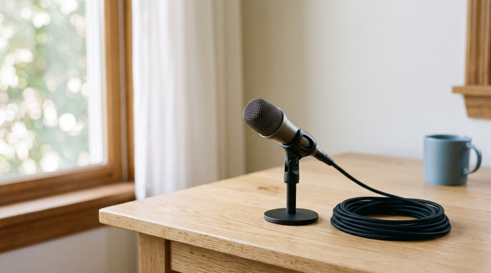
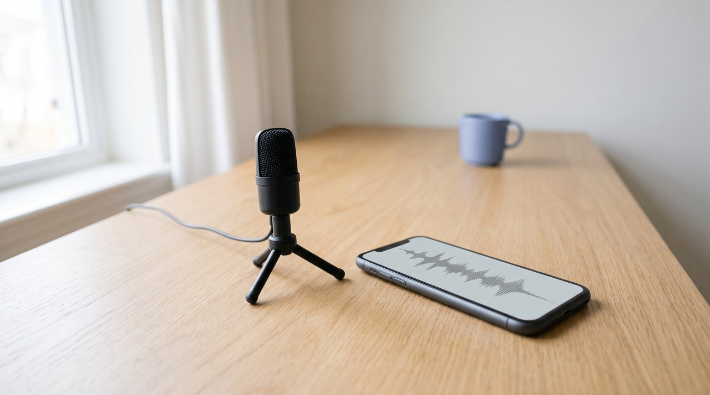
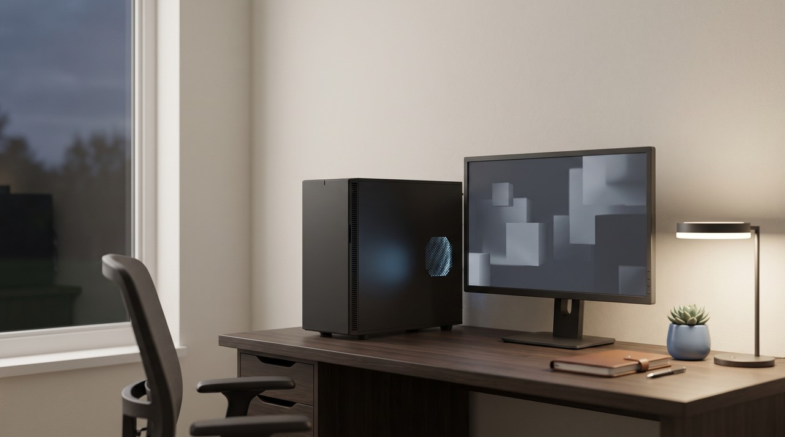

Instant vs professional voice cloning: what the difference really is, and which one you need

An instant voice clone just copies your voice from a short sample, and the AI model itself stays the same. A professional voice clone fine tunes the model on your recordings, so it actually learns your voice. ElevenLabs says under two minutes of audio can make a usable instant clone. They recommend about 30 minutes for a professional clone, and they put this on their $22 a month Creator plan. My app, VoiceClone, does both on your own PC.
| Question | ElevenLabs Instant (IVC) | ElevenLabs Professional (PVC) | VoiceClone quick clone | VoiceClone Make it perfect |
|---|---|---|---|---|
| Audio it asks for | Under two minutes can work | About 30 minutes recommended | 1 to 3 minutes | 3 to 10 clean minutes is the sweet spot |
| Does the model learn your voice? | No, it copies your sample at generation time | Yes, the model is fine tuned on your audio | No, it copies your sample at generation time | Yes, the model is trained on your audio |
| Ready in | Straight away | Minutes, not seconds | About a minute | Under an hour on a normal NVIDIA card, longer without one |
| Lowest plan that has it | Starter, $6 a month | Creator, $22 a month | Free, for one voice | Free for one voice, then the $49 one time license |
| Where it runs | ElevenLabs servers | ElevenLabs servers | Your own Windows PC, offline | Your own Windows PC, offline |
Written by Inam. I built VoiceClone, so read this knowing I am not neutral. My other engineering notes are on designesh.com. Last updated 2 October 2026.
When you look at ElevenLabs, you see two buttons for cloning a voice. These are Instant Voice Cloning and Professional Voice Cloning, often written as IVC and PVC. People usually guess the professional version is just higher quality, so they wonder if they should pay for a higher plan. The two modes actually work differently under the hood, and knowing this makes your choice easy.
An instant clone only copies your voice when it speaks, but a professional clone actually learns it. You can use an instant clone for a quick test or a draft. If people will listen to your voice for a long time, you should train it.
What is an instant voice clone?
Think about a good mimic who listens to your voicemail and does an impression of you. The mimic does not change who they are. They just copy what they hear every time they speak, and an instant clone works the same way.
ElevenLabs explains this in their voice cloning documentation. The model reads your sample every time it generates speech. It uses this sample as a conditioning signal to shape the output, but it never changes the model weights. The weights are just the millions of numbers that hold what the model knows, and an instant clone leaves them alone.
This is why an instant clone is ready right away. The docs say less than two minutes of audio can make a usable clone because there is no training step to wait for. The downside is that the base model is still just doing an impression. This means it often misses the small habits of your own voice.

What is a professional voice clone?
A professional clone takes a different approach. The model is fine tuned on your recordings, so its weights are adjusted until it actually knows your voice. ElevenLabs describes PVC in this exact way, saying it fine tunes the model and changes its parameters to better represent the target voice.
This method needs much more audio because it actually learns from your files. ElevenLabs recommends about 30 minutes of high quality audio for a professional clone, while under two minutes can work for an instant clone. The docs state that making a PVC takes minutes instead of seconds. They also use a voice captcha to confirm that the person giving the samples is the person whose voice it is.
You can hear the difference in the small details of your speech, like how you end a word or pause before making a point. An impression only captures your overall sound. Training the model is what gets your specific speaking habits right.
How big is the difference, really?
I tested both methods on my own voice when I built VoiceClone. I used a speaker matching model, which just scores how close two voices sound to each other. My instant clones scored around 80 percent against my real voice on this scale, and my trained voice scored about 96 percent. You can read my full method in the article on training a voice on your own PC.
To put it plainly, the instant clone sounded like my close relative, and the trained clone sounded like me talking into a different microphone. This gap does not matter much for a ten second test. But if a listener hears a twenty minute video or an audiobook chapter, they will notice the difference more and more.
Which plan do you need for each one on ElevenLabs?
I checked the ElevenLabs pricing page, and their Free plan has no voice cloning. Instant Voice Cloning starts on their Starter plan, which costs $6 a month and gives you 30,000 credits. Professional Voice Cloning starts on the Creator plan. That one is $22 a month for 121,000 credits, and it costs $11 for the first month.
This means a professional clone costs more every month, and it stays on their servers linked to your account. This is a normal setup for a cloud tool since they use their own graphics cards for training and generation. But it means you can only use your trained voice while you pay for the plan, and you do not get a file to keep.
How do you get both kinds on your own PC?
I built VoiceClone as a Windows app for Windows 10 and 11 using the open source GPT-SoVITS engine. The GPT-SoVITS project page shows these same two modes under different names. They call the instant kind a zero shot from a five second sample, and they call the trained kind few shot fine tuning. VoiceClone puts both of these behind simple buttons so you never have to open a terminal or write Python.
- You record 1 to 3 minutes of yourself talking in a normal way. The app will check your audio for background noise, volume, and clipping. Then it builds your quick clone in about a minute.
- You can type any text and listen to it. The app generates several takes for every line, and a speech recognizer scores them word by word so you always get the best result.
- You can click Make it perfect if the quick clone sounds close but still misses something. The app then trains a proper copy of your voice directly on your computer. This takes under an hour if you have a normal NVIDIA graphics card, and it takes longer on a PC without one.

The setup process needs one download of about 1.3 GB. After that, nothing ever leaves your computer, and the app works even if you turn the internet off. Your trained voice saves to your own hard disk, so it keeps working without any active subscription plan.
You can try both methods for free. The free version lets you clone one voice, trains it completely, and gives you 3 generations to hear how it really sounds. I also offer a $49 one time license. This removes the script length limit and gives you the word editor, retraining, and file exports, and you never have to renew anything.
When is ElevenLabs the better choice?
I like to be completely fair about this. ElevenLabs can do a few things that VoiceClone cannot do.
- ElevenLabs supports many languages, but VoiceClone speaks English only.
- ElevenLabs runs in your web browser, which means you can use it on a Mac or any other computer. VoiceClone is a Windows app.
- Their instant clone works with zero setup and no downloads. The Starter plan is also very cheap if you just need voice cloning for a month or two.
- ElevenLabs trains its professional clone on their own hardware. This is helpful if you have no NVIDIA card, because training a model on a plain PC takes a lot more time.
ElevenLabs is the better choice if you use a Mac or need other languages. But if you want to keep a trained copy of your own voice with no monthly fees, VoiceClone will do it on your PC for a $49 one time payment.
FAQ
What is the difference between instant and professional voice cloning?
An instant clone just copies your voice from a short sample when it generates speech, and the base model stays exactly the same. A professional clone fine tunes the model using your recordings. This helps the AI learn your actual voice and pick up on your small speaking habits.
How much audio do you need for a professional voice clone?
ElevenLabs asks for about 30 minutes of high quality audio to make a Professional Voice Clone. If you use VoiceClone to train a model on your own PC, the sweet spot is 3 to 10 clean minutes of you talking naturally.
Is ElevenLabs professional voice cloning free?
No, it is a paid feature. Their Free plan offers no voice cloning at all, and their Professional Voice Cloning starts on the Creator plan for $22 a month. My app VoiceClone lets you clone and fully train one voice for free, and you can generate speech 3 times to check the results.
Can I train a professional quality voice clone offline?
Yes, you can do this. VoiceClone trains a model on your Windows 10 or 11 PC, and it takes under an hour with a normal NVIDIA graphics card. You just need to download about 1.3 GB for the first setup, and then the whole app works offline.
Sources: ElevenLabs voice cloning documentation and the ElevenLabs pricing page, both read on 2 October 2026, the GPT-SoVITS project page on GitHub, and the VoiceClone product page on myvoiceclones.com.
Hear your own voice come back.
The free Windows app clones and fully trains one voice, yours, on your own PC. No account, no upload, and the download starts right away.